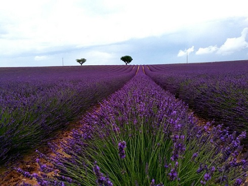
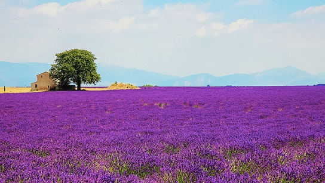
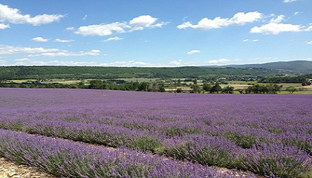

morly旅游网
薰衣草被视为爱情的信物，代表着对忠贞爱情的守护。和心爱的人一起去普罗旺斯看薰衣草是每一个女孩子由来已久的梦想
普罗旺斯，全称普罗旺斯-阿尔卑斯-蔚蓝海岸（Provence-Alpes-Coted'Azur），位于法国东南部，是一个濒临地中海的蓝色海岸，也是世界闻名的薰衣草故乡。普罗旺斯在法国南部，每一年来自世界各地的游客都要赶往这里一睹薰衣草花海的盛况，看着浓郁的紫色装点着翠绿的山谷，一阵微风吹过，薰衣草海洋随风起舞，伴着淡淡的花香迎面而来，在游客们心中留下难以忘怀的记忆。普罗旺斯如今已是薰衣草和浪漫的代名词。每年盛夏，大片汹涌的紫色花海都会在南法群山间绽放，成为一道热烈而壮阔的风景线。而越过群山，便是广阔的地中海，海风如情人的低语时时在耳边呢喃。 其实普罗旺斯不是一个城镇的名称，而是一个地区的名称，所以您无法在机票中直接搜索到普罗旺斯这个地方。
时间
什么时候看薰衣草最合适?根据当年的气候情况会有上下浮动,一般来说，普罗旺斯的最佳赏花时段是6月20日-7月15日。不同花田的花期会因地形、海拔、以及气候变化的影响而各有差异，游客们可以根据自己旅行的时间，选择最合适的赏花地点。
6月下旬-7月中旬：瓦朗索勒，高山平原区，花期较早。 花田在6月初时呈现青色，6月10日左右开始变紫。花季持续约一个半月，最后大概会在7月25日收割完毕。
8月中旬：索村，属于吕贝隆山区，海拔较高，花期较晚。 一般到6月中下旬以后，薰衣草才开始变紫色。每年的8月15日是索村薰衣草节，节后薰衣草将进入收割季。

地点
去哪里看薰衣草最好？在此推荐普罗旺斯地区看薰衣草停留的热门城市
阿维尼翁（Aignon）
堪称是最精典的普罗旺斯，薰衣草田，葡萄美酒，琳琅美食，半山小村，风土人情，或者脑海中浪漫景象之种种，你能想象的在以阿维尼翁为中心的这一带都可以找到。交通方便，从巴黎火车直达阿维尼翁只需3小时左右，每年7月的阿维尼翁戏剧节让这座城市充满艺术的气氛，清晨，在阿维尼翁的阳光中醒来，前往附近的吕贝隆（The Luberon）地区，行进在吕贝隆蜿蜒的公路上，葡萄园、的麦田，这瑰丽壮阔的大地诗篇中，紫色的薰衣草田，成为最动人的一笔。
瓦朗索勒（Valensole）
种植的多是改良后的薰衣草，植株较大较茂盛，花开得更浓密热烈。 在花开正好的时候，放眼望去，目之所及，皆是一望无际的紫色薰衣草花海，电视剧《一帘幽梦》中的场景便是在此取景的。
 尼斯（Nice）
有着丰富的文化遗产以及世界一流的歌剧院，同时将普罗旺斯风格融合在大街小巷。四季花常开，各式美丽的鲜花装饰街头巷尾和阳台上，漫步其中，恍若花团锦簇的童话世界。游览普罗旺斯薰衣草，顺便在尼斯蔚蓝海岸度假。
旅游路线
自驾的方式，出发地由你停留的城市决定：
1.石头城（Gordes）– 塞南克修道院Abbayede Sénanque（塞南克修道院）–索村（Sault）
2.瓦朗索勒（Valensole）-陶瓷小镇（MoustiersSainte-Marie）-凡尔登大峡谷和圣十字湖（Lacde Sainte Croix de Verdon）
3.普罗旺斯二日游，石头城（Gordes）– 塞南克修道院（Abbayede Sénanque）-瓦朗索勒（Valensole）-陶瓷小镇（Moustiers Sainte-Marie）-凡尔登大峡谷和圣十字湖（Lac de Sainte Croix de Verdon）。
4. 阿尔勒（Arles）-莱博小镇（Les Bauxde Provence）-加尔桥（Pont du Gard）
tips:
因为薰衣草和向日葵是在远离市区的郊区，一般步行很难到达，自驾山多路窄，道路崎岖，路况不熟悉有安全疑虑，参加当地的薰衣草团深度二日游是不错的选择，只需花费少量费用，有“老司机”带着玩。
沁人心脾的薰衣草花香，弥散在南法湛蓝的苍穹下，如果此生一定要去看一次薰衣草，那普罗旺斯的薰衣草必将是一生所终极向往的紫色梦境。
内容整理至网络，如有侵权，请联系我们！1255394075@qq.com